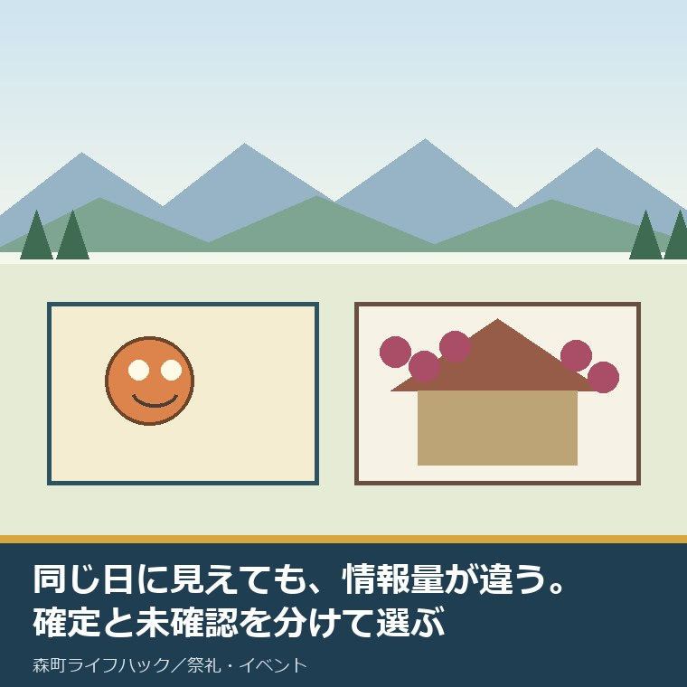
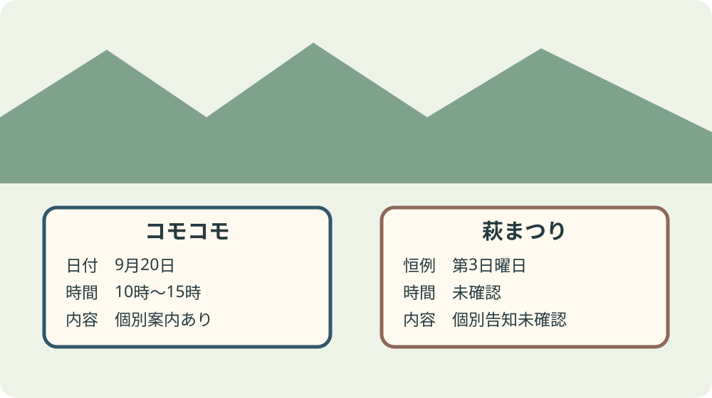
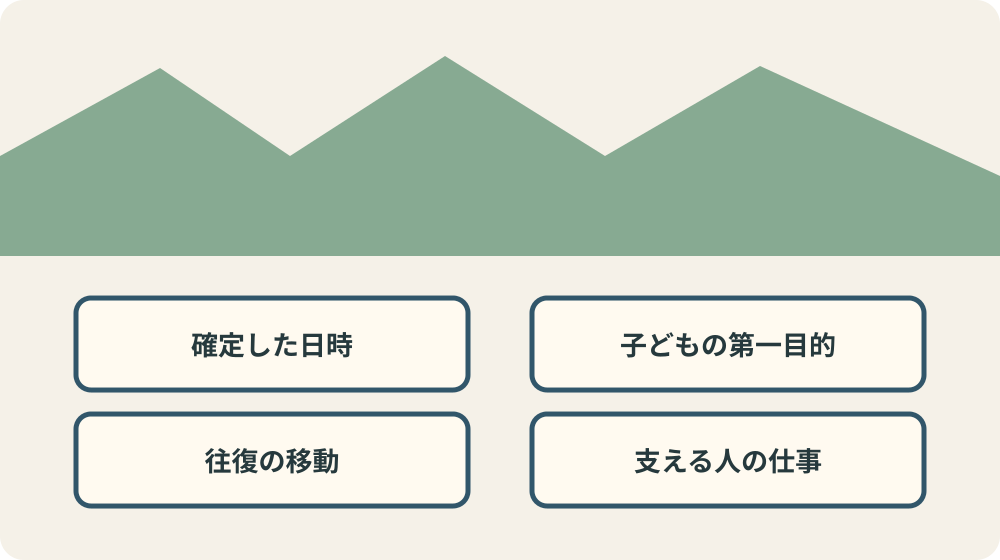

森町9月イベント2026｜コモコモと萩まつりを比較

この記事の要点
Q. 2026年9月の森町で、コモコモイベントと萩まつりはどちらを選べばよいですか。
A. 2026年の日時と内容まで確認できるのは、9月20日10時から15時のコモコモイベントです。萩まつりは観光協会の季節行事欄に9月第3日曜日とありますが、2026年の個別告知、時刻、内容、駐車場は確認できません。キャラクターや抽選を目的にする家族はコモコモを軸にし、萩を見たい人は蓮華寺へ当年開催を確認します。同日にはしごできるとは決めず、確定した一会場を第一目的にします。
2026年9月5日、森町観光協会のイベント一覧と個別ページ、森町のコモコモ案内、蓮華寺の施設案内を確認しました。
観光協会の2026年9月欄に個別掲載されているのは「コモコモイベント＠アクティ森」です。
一方、萩まつりは月別一覧ではなく、季節行事欄に「蓮華寺・第3日曜日」と掲載されています。
同じ9月20日らしい、だけで二つをはしごするのは雑です。片方は時刻まで出ている。片方は2026年の個別告知がない。情報の粗さが違うものを同じ確定欄に並べません。
私は両方へ2026年に参加した体験ストックを持ちません。見たように書かず、公式情報の厚さそのものを比較します。
森町の催しを選ぶ家族にとって、名前の魅力だけでなく、移動、待ち時間、子どもの疲れ、支える人の仕事も一日の条件です。
比較の結論：同じ日に見えても確定情報が違う
コモコモは2026年9月20日日曜日、10時から15時、会場は森町体験の里アクティ森と確定しています。
内容はキャラクター集合、スタンプラリー、限定グッズ抽選、コモコモ焼きの販売です。
萩まつりは、観光協会の季節行事欄で9月第3日曜日、会場は蓮華寺と確認できます。
2026年の第3日曜日を暦で数えると9月20日です。ただし、これは暦の計算で、2026年の開催告知ではありません。
萩まつりの開始・終了時刻、2026年の内容、申込、当日費用、駐車場、雨天時の扱いは確認できませんでした。
通常の蓮華寺は拝観自由と案内されていますが、祭り当日の全企画が無料だとは読み替えません。
比較表で空欄が多いことは、催しに価値がない意味ではありません。出発前に確認する量が多い、という違いです。

コモコモは9月20日10時から15時
コモコモイベント2026は、2026年9月20日日曜日の10時から15時まで、アクティ森で開催されます。
観光協会の詳細は2026年8月21日現在、森町公式ページは2026年7月29日更新です。
登場予定は、うなぽん、きくのん、しっぺい、茶のみやきんじろう、なみまる・ふうちゃん、フッピー、ジュビロくん・ジュビィちゃんです。
しっぺいは午前のみと案内されています。会いたいキャラクターが決まっている家族は、全体の終了15時だけを見ない方がよいです。
限定グッズ抽選には、スタンプラリーの達成と、アクティ森での合計1,000円分のレシートが要ります。
レシートは合算できます。小学生以下でスマートフォンがない場合、保護者の達成画面を使えますが、レシートは1人につき1,000円分です。
この1,000円は入場料ではありません。抽選条件と、催しへの参加料金を混ぜないようにします。
関連するフォトスポットは8月8日から9月29日までです。イベント当日だけに限られません。
天候によって中止する場合があります。事前申込の要否、入場料、駐車台数、満車時対応は確認した本文にありません。
萩まつりは恒例日と会場まで、2026年個別情報は未確認
蓮華寺は森町森2144にあり、観光協会の施設ページには電話番号0538-85-5374が掲載されています。
季節行事欄は、萩まつりを9月の第3日曜日としています。
しかし、2026年9月の月別欄に萩まつりの個別掲載はなく、蓮華寺公式サイトでも2026年告知を確認できませんでした。
蓮華寺公式サイトのHTTPページは取得できましたが、HTTPSページは証明書の信頼エラーになりました。検索結果の断片だけで内容を補いません。
花の咲き具合、催しの時刻、茶席や展示の有無、費用を、過去開催から2026年へ移して書くこともしません。
行きたい人は「2026年9月20日に萩まつりを行うか」「何時から何時か」「駐車場はどこか」の三つを蓮華寺へ聞きます。
寺の通常案内と祭り当日の運用は別です。拝観自由という一語から、当日の交通や費用まで無料・自由と決めないことです。
移動で比べる：二会場を同じ一日に詰めない
アクティ森は森町問詰1115-1、蓮華寺は森町森2144です。住所が違うだけで、移動時間を確定する案内にはなりません。
コモコモの車での目安は、新東名の森掛川インターチェンジから約15分、東名の袋井インターチェンジから約30分です。
イベント当日の渋滞、駐車待ち、二会場間の所要時間は掲載されていません。
「午前に萩、午後にコモコモ」と組むには、萩まつりの時刻が要ります。分からない時刻を都合よく午前へ置かないでください。
子ども連れなら、車を降りる、歩く、トイレへ行く、食事を取る、抽選の列に並ぶ時間も足します。
森町の催しで駐車と交通案内を確かめる記事では、開催案内と交通案内を別々に保存する順番を書いています。
森町の公共交通空白地域を数字で見た記事も、町内なら移動が軽いと決めないための材料です。
良い点：コモコモは抽選条件を家で分けられる
良い点は、コモコモの日時、場所、参加キャラクター、抽選条件、雨天中止の可能性が一つの案内で読めることです。
保護者のスマートフォンを子どもが使える条件と、レシートは1人ごとに1,000円分という違いも先に分かります。
目的が「キャラクターに会う」なら、午前のみの登場を予定に反映できます。
目的が「写真を撮る」なら、フォトスポットは9月29日まで続くため、9月20日に全部を詰め込まない選択もできます。
アクティ森で買い物をすることが抽選と施設の売上につながる設計も、支える費用を見えやすくしています。
もりもり2万人まつりを搬入・出店料・人手から見た記事と比べると、催しを支える条件の見え方が違います。
注文したい点：萩まつりの当年情報を月別欄へ載せたい
萩まつりの存在を季節行事欄で見つけられるのは良い一方、家族が2026年の予定を組む情報は足りません。
当年の開催可否、時刻、主な内容、費用、駐車場、雨天対応、問い合わせ先を月別欄から一ページで読めると助かります。
古くから続く催しほど、地元では分かっている前提が増えます。町外から来る人や初めての家族には、その前提がありません。
情報がないと問い合わせが寺や観光案内へ集中します。当年ページは来訪者のためだけでなく、受ける側の電話負担を減らします。
ただし、告知を出す作業そのものにも担い手が要ります。写真、時刻、連絡先を毎年一から作るのではなく、前年ページを更新できる形が現実的です。
行く側も、未確認を不満だけで終わらせず、質問を三つにまとめて一回で聞きます。答えを家族で共有し、同じ電話を重ねません。
大石の視点：人気より、家族と現場の余白で選ぶ
私は、イベントの数が多いことだけを森町の強さだとは思いません。少ない担い手が複数の準備を重ねているなら、数の多さは負担にもなります。
コモコモでは会場設営、キャラクター対応、スタンプ確認、抽選、販売、駐車案内、片付けがあります。
萩まつりにも、萩の手入れ、境内の清掃、来訪者対応、駐車の案内があるはずだと想像できますが、2026年の役割分担は未確認です。
分からない仕事を事実のように列挙せず、それでも誰かの準備があることを忘れない。この二つを同時に守ります。
都会の催しと森町の催しは、規模や交通の条件が違います。優劣ではなく、家族の目的と移動手段に合う方を選びます。
満員の会場をつくるより、案内に沿って来た家族が無理なく帰り、支える人が片付けを終えられる一日の方が次へ続きます。
座席型の文化会館公演を整理した記事を見ると、屋内の指定席と屋外を歩く催しで、予定の組み方が違うことも分かります。
家族の比較表は「ある情報」より「ない情報」を先に見る
イベント比較というと、内容の多さ、写真の楽しさ、景品の豪華さへ目が向きます。けれど、当日の困りごとは、時刻や駐車場など書かれていない欄から生まれます。
一列目は開催確定です。コモコモは当年の町公式案内と観光協会詳細があります。萩まつりは恒例日の掲載までで、当年確定の根拠は見つかりません。
二列目は滞在時間です。コモコモは10時から15時の5時間です。萩まつりは開始・終了とも未確認なので、他の予定との前後関係を組めません。
三列目は費用です。コモコモの抽選には1人につき1,000円分のレシートが要りますが、入場料の記載はありません。萩まつり当日の費用も未確認です。
四列目は移動です。コモコモには高速道路のインターチェンジからの車の目安がありますが、駐車台数はありません。萩まつりには2026年当日の交通案内がありません。
五列目は中止条件です。コモコモには天候中止の可能性があります。萩まつりは雨天時の開催、縮小、中止のどれか分かりません。
六列目は問い合わせです。コモコモは町の観光担当窓口の電話が示されています。蓮華寺の電話は施設ページにありますが、祭り専用窓口とは書かれていません。
この六列を埋めると、コモコモは「行く前の最終確認」、萩まつりは「開催条件から確認」という違いが見えます。好みを比べる前の段階が違います。
家族会議では、未確認欄を想像で埋めた人の声が強くなりがちです。「たぶん午前」「たぶん停められる」という言葉には印を付け、決定欄へ入れません。
一度の電話で確認できた内容は、確認日、相手先、回答を短くメモします。家族内の伝言で時刻が変わるのを防ぎ、会場への重複問い合わせも減らします。
来場者の準備が整うほど、受付や駐車場で説明する人の仕事は減ります。イベント選びは消費者の比較だけでなく、現場へ余計な質問を持ち込まない準備でもあります。
萩まつりの情報不足を、寺や地域の怠慢と決めつける気はありません。毎年の告知を更新するにも、日程確認、文章、写真、掲載の担当が要ります。
だからこそ、町と観光協会が当年ページの型を用意し、地元は変わった項目だけ直せる形がよいと思います。担い手を責めず、情報更新の仕事を軽くする対案です。
比較表を保存した後で情報が更新されたら、古い画面だけを信じず公式ページへ戻ります。確認日は2026年9月5日であり、催し当日の情報を保証するものではありません。
電話で確認する場合も「萩は咲いていますか」だけで終えず、祭りの開催、受付時刻、駐車場所を分けて聞きます。花の見頃と行事の実施は同じ問いではありません。
確定が取れなければ、コモコモ一会場か別日に蓮華寺を訪ねる案へ戻します。行程を減らす決断も、移動と現場の負担を増やさない選択です。

対案・結論：第一目的を一会場だけ決める
今日できる小さな一歩は、家族の予定表に二会場を入れることではありません。「9月20日の第一目的」を一つ書くことです。
キャラクター、スタンプ、抽選が目的なら、コモコモの10時から15時を軸にします。午前のみの登場が目的なら到着目標をさらに前へ置きます。
萩を見たいなら、蓮華寺へ2026年の開催可否、時刻、駐車場を確認し、答えが揃ってから予定にします。
二つを回る案は、両方の時刻と移動が確定した後の第二案です。最初から成功条件にしません。
子どもが疲れたら一会場で帰る、駐車待ちが長ければ抽選を外す、天候が悪ければ延期できるフォトスポットへ切り替える。逃げ道を先に決めます。
一つしか行けなくても失敗ではありません。家族が目的を果たし、現場の案内を守って帰ることが、森町の催しを支える参加です。
よくある質問
Q1. コモコモイベント2026はいつ、どこで開かれますか。
A1. 2026年9月20日日曜日の10時から15時まで、森町体験の里アクティ森で開かれます。天候によって中止する場合があります。駐車台数や満車時の対応は確認した公式案内にありません。
Q2. 萩まつりも2026年9月20日開催で確定ですか。
A2. 2026年の個別開催告知は確認できませんでした。観光協会の季節行事欄には蓮華寺の萩まつりを9月第3日曜日と掲載しており、2026年の暦では9月20日ですが、開催確定とは分けて蓮華寺へ確認します。
Q3. コモコモの1,000円は入場料ですか。
A3. 入場料ではありません。限定グッズの抽選に参加する条件として、スタンプラリー達成と、アクティ森での合計1,000円分のレシートが示されています。参加料や入場料は公式案内で確認できません。
参考にした公式情報
- イベント一覧／森町観光協会（2026年9月欄と季節行事欄を2026年9月5日に確認）
- コモコモイベント2026／森町観光協会（2026年8月21日現在。日時、内容、抽選条件を確認）
- コモコモイベント2026／静岡県森町（2026年7月29日更新。時間、登場予定、アクセスを確認）
- イベント情報一覧／静岡県森町（当年の町公式イベント掲載状況を2026年9月5日に確認）
- 蓮華寺／森町観光協会（住所、電話、通常の拝観案内を2026年9月5日に確認）

磐田市で小さな不動産業を営みながら、森町の空き家・農地・実家じまいの相談を受けています。地域と不動産実務をつなぐ目線で確認の順番を書きます。
最終確認日：2026-09-05 ／ コモコモの内容、登場予定、雨天対応は変わることがあります。萩まつりの2026年開催確定、時刻、内容、費用、駐車場、雨天対応は確認できていません。出発前に各公式案内と会場へ確認してください。